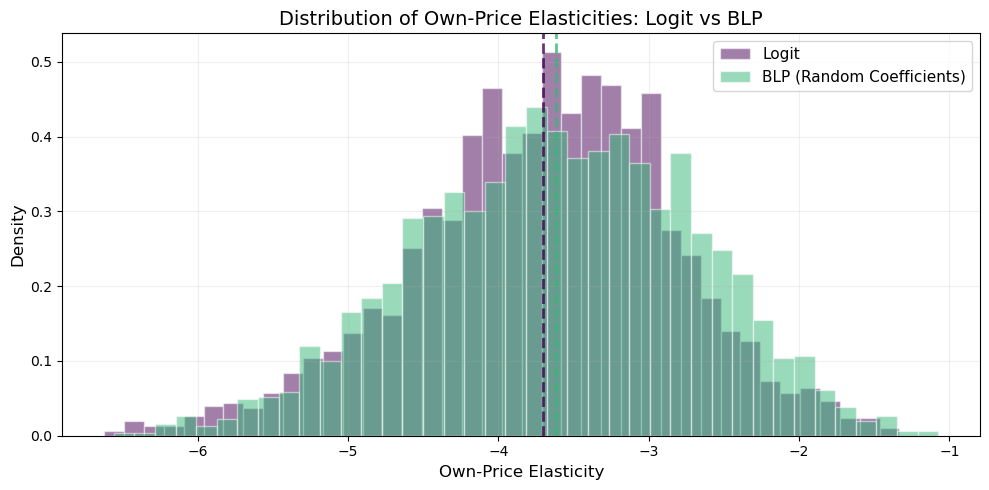

Notes on the Berry, Levinsohn & Pakes (1995) random coefficients logit model for demand estimation, implemented via the PyBLP Python package.
BLP solves a fundamental problem in empirical IO: estimating demand for differentiated products using only market-level data (aggregate shares and prices), while allowing for heterogeneous consumer preferences and endogenous prices. The key insight is that unobserved product quality (\(\xi_j\)) is correlated with price, so OLS is biased — BLP uses a GMM framework with instrumental variables to recover consistent estimates.
We walk through the model using the Nevo (2000) fake cereal dataset — a panel of 24 cereal brands across 94 city-quarter markets.
where \(d_i\) are observed demographics (income, age, etc.) and \(\nu_i \sim N(0, I)\) captures unobserved taste variation. The parameters to estimate are:
\(\bar{\beta}\) — mean tastes (linear parameters)
\(\Pi\) — how demographics shift tastes (K \(\times\) D matrix)
\(\Sigma\) — standard deviations of unobserved heterogeneity (K \(\times\) K, often diagonal)
Market Shares
Integrating over the consumer distribution, the predicted market share of product \(j\) is:
where the mean utility is \(\delta_{jt} = x_j' \bar{\beta} - \bar{\alpha} \, p_{jt} + \xi_{jt}\) and the individual deviation is \(\mu_{ijt} = x_j' (\Pi d_i + \Sigma \nu_i)\).
This integral has no closed form — it’s approximated via simulation (Monte Carlo draws) or quadrature (product rules).
Berry Inversion
Given nonlinear parameters \(\theta_2 = (\Sigma, \Pi)\) and observed shares \(S_{jt}\), the contraction mapping of Berry (1994) recovers the mean utility vector \(\delta\) that rationalizes the data:
This iterates until \(s(\delta, \theta_2) = S\) (predicted = observed shares). The structural error is then \(\xi_{jt} = \delta_{jt} - x_j' \bar{\beta} + \bar{\alpha} \, p_{jt}\).
GMM Estimation
The endogeneity problem: \(\text{Corr}(p_{jt}, \xi_{jt}) \neq 0\) — firms set higher prices for products with higher unobserved quality.
Instruments\(Z\) must satisfy \(\mathbb{E}[Z' \xi] = 0\). Common choices: - BLP instruments: sums of characteristics of other products by the same firm (cost shifters) - Differentiation instruments: functions of distance to rivals in characteristic space
The GMM objective:
\[
\hat{\theta} = \arg\min_\theta \; \xi(\theta)' Z \, W \, Z' \xi(\theta)
\]
where \(W\) is a weighting matrix (identity for 1-step, \(\widehat{\text{Var}}(Z'\xi)^{-1}\) for 2-step efficient GMM).
Setup & Data Exploration
import pyblpimport numpy as npimport pandas as pdimport matplotlib.pyplot as pltimport seaborn as snsimport warningswarnings.filterwarnings('ignore')pyblp.options.digits =2pyblp.options.verbose =Falseprint(f'PyBLP version: {pyblp.__version__}')
c:\Users\danny\anaconda3\Lib\site-packages\pandas\core\computation\expressions.py:22: UserWarning: Pandas requires version '2.10.2' or newer of 'numexpr' (version '2.8.7' currently installed).
from pandas.core.computation.check import NUMEXPR_INSTALLED
c:\Users\danny\anaconda3\Lib\site-packages\pandas\core\arrays\masked.py:56: UserWarning: Pandas requires version '1.4.2' or newer of 'bottleneck' (version '1.3.7' currently installed).
from pandas.core import (
PyBLP version: 1.1.2
Nevo (2000) Cereal Data
The dataset contains 24 cereal brands observed across 94 city-quarter markets. Each observation is a product-market pair with: - shares: market share of the product - prices: price per serving - sugar: sugar content - mushy: indicator for mushy cereals - demand_instruments0–19: pre-computed BLP instruments - firm_ids: 5 firms (think Kellogg’s, General Mills, etc.) - product_ids: 24 brand identifiers
# Load agent (consumer) demographic dataagent_data = pd.read_csv(pyblp.data.NEVO_AGENTS_LOCATION)print(f'Agent data shape: {agent_data.shape}')print(f'Agents per market: {agent_data.groupby("market_ids").size().iloc[0]}')print()agent_data[['market_ids', 'weights', 'income', 'income_squared', 'age', 'child']].describe().round(4)
Agent data shape: (1880, 12)
Agents per market: 20
weights
income
income_squared
age
child
count
1880.00
1880.0000
1880.0000
1880.0000
1880.0000
mean
0.05
-0.0000
0.0000
-0.0000
0.0000
std
0.00
0.9396
16.0435
0.9446
0.4215
min
0.05
-4.9382
-65.9464
-3.2258
-0.2309
25%
0.05
-0.4282
-8.4548
-0.3926
-0.2309
50%
0.05
0.1608
2.0565
0.2399
-0.2309
75%
0.05
0.5887
10.1278
0.6454
-0.2309
max
0.05
2.3346
46.8563
1.2740
0.7691
Step 1: Plain Logit
The simplest demand model: all consumers have identical tastes (\(\Sigma = 0\), \(\Pi = 0\)). The market share equation collapses to the familiar logit:
This is a linear IV regression of log share ratios on product characteristics and price. We absorb brand fixed effects (product dummies) and use the 20 pre-computed demand instruments.
Problem Results Summary:
==========================================
GMM Objective Clipped Weighting Matrix
Step Value Shares Condition Number
---- --------- ------- ----------------
2 +1.9E+02 0 +5.7E+07
==========================================
Cumulative Statistics:
========================
Computation Objective
Time Evaluations
----------- -----------
00:00:00 2
========================
Beta Estimates (Robust SEs in Parentheses):
==========
prices
----------
-3.0E+01
(+1.0E+00)
==========
The price coefficient \(\hat{\alpha} \approx -30\) is large and negative: higher prices reduce market share. But the plain logit imposes the IIA property — substitution patterns are proportional to market shares, regardless of product similarity. This is unrealistic: if Cheerios’ price rises, consumers are more likely to switch to similar cereals than to very different ones.
Now we add heterogeneous preferences via random coefficients on the constant (inside vs. outside good), price, sugar, and mushy. This breaks IIA: products with similar characteristics become closer substitutes.
We need two formulations: - X1 (linear, \(\bar{\beta}\)): variables entering mean utility — price + product fixed effects - X2 (nonlinear, \(\Sigma\)): variables receiving random coefficients — constant, price, sugar, mushy
Plus an agent formulation for demographics: income, income\(^2\), age, child.
# X1: linear parameters (price + brand FE)X1 = pyblp.Formulation('0 + prices', absorb='C(product_ids)')# X2: random coefficient variablesX2 = pyblp.Formulation('1 + prices + sugar + mushy')# Agent demographics formulationagent_formulation = pyblp.Formulation('0 + income + income_squared + age + child')# Build the problemblp_problem = pyblp.Problem( (X1, X2), product_data, agent_formulation, agent_data,)blp_problem
Dimensions:
=================================================
T N F I K1 K2 D MD ED
--- ---- --- ---- ---- ---- --- ---- ----
94 2256 5 1880 1 4 4 20 1
=================================================
Formulations:
===================================================================
Column Indices: 0 1 2 3
----------------------------- ------ -------------- ----- -----
X1: Linear Characteristics prices
X2: Nonlinear Characteristics 1 prices sugar mushy
d: Demographics income income_squared age child
===================================================================
Initial Values & Solving
The nonlinear GMM objective is non-convex, so starting values matter. We use values close to Nevo (2000)’s published estimates:
\(\Sigma_0\) = diagonal matrix of standard deviations for (constant, price, sugar, mushy)
\(\Pi_0\) = matrix of demographic interactions
Zeros in \(\Sigma_0\) or \(\Pi_0\) are constrained to remain zero during optimization — this is how you restrict the model.
With random coefficients, these vary across products and markets (unlike logit, where \(\varepsilon_{jj} \approx \alpha \, p_j (1 - s_j)\) for all products).
# Compute full elasticity matrices (J x J for each market)elasticities = blp_results.compute_elasticities()# Extract own-price elasticities (diagonal of each market's matrix)own_elasticities = blp_results.extract_diagonal_means(elasticities)print(f'BLP own-price elasticities:')print(f' Mean: {own_elasticities.mean():.3f}')print(f' Median: {np.median(own_elasticities):.3f}')print(f' Std: {own_elasticities.std():.3f}')print(f' Range: [{own_elasticities.min():.3f}, {own_elasticities.max():.3f}]')
fig, ax = plt.subplots(figsize=(10, 5))# Logit own-price elasticities (all products across markets)logit_diag = []market_ids = product_data['market_ids'].unique()idx =0for m in market_ids: n_j = (product_data['market_ids'] == m).sum() mat = logit_elasticities[idx:idx+n_j] logit_diag.extend(np.diag(mat).tolist()) idx += n_j# BLP own-price elasticities (same extraction)blp_diag = []idx =0for m in market_ids: n_j = (product_data['market_ids'] == m).sum() mat = elasticities[idx:idx+n_j] blp_diag.extend(np.diag(mat).tolist()) idx += n_jax.hist(logit_diag, bins=40, alpha=0.5, color='#440154', label='Logit', density=True, edgecolor='white')ax.hist(blp_diag, bins=40, alpha=0.5, color='#35b779', label='BLP (Random Coefficients)', density=True, edgecolor='white')ax.axvline(np.mean(logit_diag), color='#440154', linestyle='--', linewidth=2, alpha=0.8)ax.axvline(np.mean(blp_diag), color='#35b779', linestyle='--', linewidth=2, alpha=0.8)ax.set_xlabel('Own-Price Elasticity', fontsize=12)ax.set_ylabel('Density', fontsize=12)ax.set_title('Distribution of Own-Price Elasticities: Logit vs BLP', fontsize=14)ax.legend(fontsize=11)ax.grid(True, alpha=0.2)plt.tight_layout()plt.show()

Cross-Price Elasticity Heatmap
The cross-price elasticity \(\varepsilon_{jk} = \frac{\partial s_j}{\partial p_k} \cdot \frac{p_k}{s_j}\) measures how product \(j\)’s share responds to a change in product \(k\)’s price.
Under logit, all cross-elasticities with respect to product \(k\) are proportional to \(s_k\) — substitution is driven purely by market share, not similarity. Under BLP, cross-elasticities reflect product similarity through the random coefficients, producing richer substitution patterns.
Diversion ratios are central to merger analysis: if two merging firms’ products have high diversion ratios to each other, the merger raises greater competitive concerns.
Given estimated demand and the assumption of multi-product Bertrand-Nash pricing, we can back out implied marginal costs from the first-order conditions:
\[
p = c + \underbrace{(\Omega \odot \Delta)^{-1} s}_{\text{markup}}
\]
where \(\Omega\) is the ownership matrix and \(\Delta_{jk} = -\partial s_k / \partial p_j\) is the demand Jacobian.
Micro Moments: Incorporating Individual-Level Data
Demographics vs. Micro Moments
A common point of confusion: the agent demographics we used above (\(d_i\) = income, age, child) are not micro moments. They play very different roles:
Agent Demographics (\(\Pi d_i\))
Micro Moments
What they are
Draws from the population distribution of consumer types
Empirical statistics computed from individual-level survey data
Role in estimation
Define the integration measure for computing predicted shares
Provide additional moment conditions in the GMM objective
What they match
Nothing directly — they specify how to integrate over heterogeneity
Match model-predicted statistics to observed survey statistics
Example
“20 draws of (income, age) per market, used to approximate the share integral”
“The average income of consumers who bought brand X is $45,000”
Identification
Help compute \(s_j(\delta, \theta_2)\) but don’t add moment conditions
Add new moments \(\bar{g}_M\) that help pin down \(\Sigma\) and \(\Pi\)
Key insight: In the standard BLP setup, the only moments matched are the demand-side conditions \(\mathbb{E}[Z'\xi] = 0\) (instruments orthogonal to the structural error). Demographics help compute predicted shares, but they don’t provide additional data to match. Micro moments add extra targets: they say “the model must also predict that the average age of mushy cereal buyers is 35 and that high-income consumers are 20% more likely to buy premium brands.”
The Math
The standard BLP GMM stacks demand (and possibly supply) moments:
where \(f_m(\bar{v})\) is the observed statistic from survey data (e.g., \(\mathbb{E}[\text{income} \mid \text{bought mushy cereal}] = 0.35\)) and \(f_m(v(\theta))\) is the model-predicted equivalent.
Each micro moment part \(v_p\) is a weighted average over agents, products, and markets:
where \(s_{ijt}(\theta)\) is the model-predicted probability that agent \(i\) buys product \(j\) in market \(t\), and \(w^d_{pijt}\) and \(v_{pijt}\) are dataset-specific weights and values.
Types of Micro Data
Common sources of micro moments include:
Consumer surveys (e.g., Consumer Expenditure Survey): “What is the average income of buyers of product category X?”
Scanner data with demographics: “What fraction of high-income households buy premium brands?”
Second-choice data: “Among consumers who bought brand A, what fraction would have bought brand B as their second choice?” (very powerful for identifying substitution patterns)
Purchase probabilities by segment: “What is the probability a household with children buys a sugary cereal?”
Why Micro Moments Help
Market-level shares alone may not strongly identify the nonlinear parameters \((\Sigma, \Pi)\). Many combinations of \((\Sigma, \Pi)\) can generate similar aggregate shares. Micro moments break this degeneracy by providing additional targets:
\(\Sigma\) identification: Conditional purchase probabilities by product type pin down how much unobserved heterogeneity there is.
\(\Pi\) identification: Conditional demographic means (e.g., average age of mushy cereal buyers) directly inform how demographics shift tastes.
Substitution patterns: Second-choice data directly constrains cross-elasticities, which are otherwise weakly identified from shares alone.
Example: Micro Moments with Nevo Data
Since we don’t have real survey data for these cereals, we’ll use a practical workflow: simulate micro data from our estimated model, then use those simulated statistics as targets for re-estimation. This demonstrates the full PyBLP micro moments API.
The idea: use simulate_micro_data() to generate individual-level purchase records consistent with our estimates, compute statistics from them, then pass those as micro moment targets.
We’ll construct two types of micro moments: 1. Conditional demographic means: \(\mathbb{E}[\text{income} \mid \text{bought mushy cereal}]\) 2. Purchase probability by segment: \(\mathbb{E}[\mathbf{1}\{\text{bought any cereal}\} \mid \text{has children}]\)
# Step 1: Define a micro dataset# This represents a hypothetical consumer survey of 5,000 observations# compute_weights returns a (I_t x 1+J_t) matrix of sampling weights# Here: all agent-product pairs are equally likely to be sampledmicro_dataset = pyblp.MicroDataset( name="Consumer Survey", observations=5000, compute_weights=lambda t, p, a: np.ones((a.size, 1+ p.size)),)# Step 2: Simulate micro data from our BLP estimates# This generates individual purchase records consistent with the modelmicro_data = blp_results.simulate_micro_data(dataset=micro_dataset, seed=42)micro_df = pd.DataFrame(pyblp.data_to_dict(micro_data))print(f'Simulated micro data: {micro_df.shape[0]} observations')print(f'Columns: {list(micro_df.columns)}')print(f'Outside option (choice=0): {(micro_df["choice_indices"] ==0).sum()} / {len(micro_df)}')micro_df.head()
# Step 5: Re-estimate with micro moments# The micro moments are passed to solve() as additional moment conditionsblp_micro_results = blp_problem.solve( initial_sigma, initial_pi, optimization=pyblp.Optimization('bfgs', {'gtol': 1e-5}), method='1s', micro_moments=micro_moments,)blp_micro_results
Logit is fast and easy but imposes unrealistic substitution patterns (IIA). All products are equally substitutable conditional on shares.
BLP breaks IIA via random coefficients: products similar in characteristics are closer substitutes. This is critical for realistic merger simulation and pricing counterfactuals.
Agent demographics (\(\Pi d_i\)) are part of the model specification — they define the integration measure for computing predicted shares, but they don’t add moment conditions.
Micro moments are additional data from individual-level surveys that provide extra moment conditions in the GMM objective. They improve identification of \(\Sigma\) and \(\Pi\) by matching conditional statistics like “average income of mushy cereal buyers.”
Post-estimation is where BLP earns its keep: elasticity matrices, diversion ratios, markups, and full merger simulations with equilibrium price recomputation.
References
Berry, S. T. (1994). Estimating Discrete-Choice Models of Product Differentiation. RAND Journal of Economics, 25(2), 242–262.
Berry, S., Levinsohn, J., & Pakes, A. (1995). Automobile Prices in Market Equilibrium. Econometrica, 63(4), 841–890.
Berry, S., Levinsohn, J., & Pakes, A. (2004). Differentiated Products Demand Systems from a Combination of Micro and Macro Data: The New Car Market. Journal of Political Economy, 112(1), 68–105.
Petrin, A. (2002). Quantifying the Benefits of New Products: The Case of the Minivan. Journal of Political Economy, 110(4), 705–729.
Nevo, A. (2000). A Practitioner’s Guide to Estimation of Random-Coefficients Logit Models of Demand. Journal of Economics & Management Strategy, 9(4), 513–548.
Conlon, C., & Gortmaker, J. (2020). Best Practices for Differentiated Products Demand Estimation with PyBLP. RAND Journal of Economics, 51(4), 1108–1161.
Conlon, C., & Gortmaker, J. (2023). Incorporating Micro Data into Differentiated Products Demand Estimation with PyBLP. Working Paper.